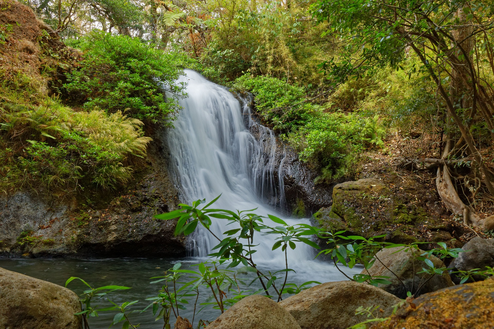

 Costa Rica liegt in Mittelamerika zwischen Panama und Nicaragua. Die Lage bietet eine der einzigartigsten Artenvielfalt der Welt. Obwohl Costa Rica ein recht kleines Land ist, finden Sie eine große Auswahl an Naturzielen direkt nebeneinander. In der Tat, an einem Tag können Sie einen Strand, einen Wasserfall, ein Naturschutzgebiet, einen Nebelwald, ein Reservat, einen Vulkan und tropischen Regenwald besuchen! Was Costa Rica so erstaunlich macht, ist jedoch die Fülle an tropischen Regenwäldern, die einen Großteil des Landes ausmachen. Es gibt 13 verschiedene Arten von Regenwäldern auf der Welt, die sich jeweils aus unterschiedlichen Flora und Fauna, Wildtieren und Mikroklimas zusammensetzen.
Die hohen Bäume bilden ein Vordach, unter dem viele Tiere, Insekten und Vogelarten glücklich leben. Einige der berühmtesten Tiere, die in den Regenwäldern Costa Ricas zu finden sind, sind Faultiere, Brüllaffen, weißgesichtige Kapuzineraffen, Aras und Pfeilgiftfrösche, Regenwälder sind der Grund, warum Costa Rica so viele Nationalparks, Schutzgebiete, Reservate und eine so große Vielfalt an Flora und Fauna hat. Sie sind der Grund, warum Sie eine große Vielfalt an Wildtieren und Wanderwegen finden. Regenwälder gibt es in vielen Formen und Größen. Dank des Ökosystems von Costa Rica finden Sie 6 Arten von Wäldern im ganzen Land. Lesen Sie weiter, um mehr über die verschiedenen Arten von Regenwäldern in Costa Rica und was sie so außergewöhnlich macht!
Regenwälder findet man in Costa Rica fast überall. Manuel Antonio, die Halbinsel Osa, Monteverde und Tortuguero sind nur einige Beispiele. Tatsächlich sind die Waldtypen in jeder Region unterschiedlich. Die traditionellen Regenwälder finden Sie auf der Halbinsel Osa und in Tortuguero. Auf der nördlichen Pazifikseite, genauer gesagt in Guanacaste, sehen wir die Trockenwälder. Nicht weit von San Jose entfernt befindet sich schließlich der Nebelwald von Monteverde.
Jede Art von Regenwald ist wunderschön und macht Costa Rica zu einem der artenreichsten Länder der Welt. Regenwälder jeder Art bilden eine ausgezeichnete Grundlage für das Leben zum Blühen. Sechs Prozent der weltweiten Biodiversität (Pflanzen und Tiere) nennen diese Regenwälder Heimat. Costa Rica ist die Heimat von 500.000 Arten, von denen etwa 300.000 Insekten sind, und Säugetiere wie Agoutis, Coatimundi, Brüll- und Kapuzineraffen, Faultiere und Krokodile. Costa Ricas Regenwälder beherbergen auch einige der am stärksten gefährdeten Tierarten, einschließlich der Jaguare und des Baird’s Tapir. Durch die Abholzung oder Zerstörung von Lebensräumen sind sie jedoch in den letzten Jahren leider geschrumpft. Sie können auch den prächtigen Quetzal- und Scharlachroten Ara sehen – zwei Arten von einzigartigen und wunderschönen Vögeln. Vogelbeobachter kommen aus der ganzen Welt, um sie in ihrem natürlichen Lebensraum zu sehen.